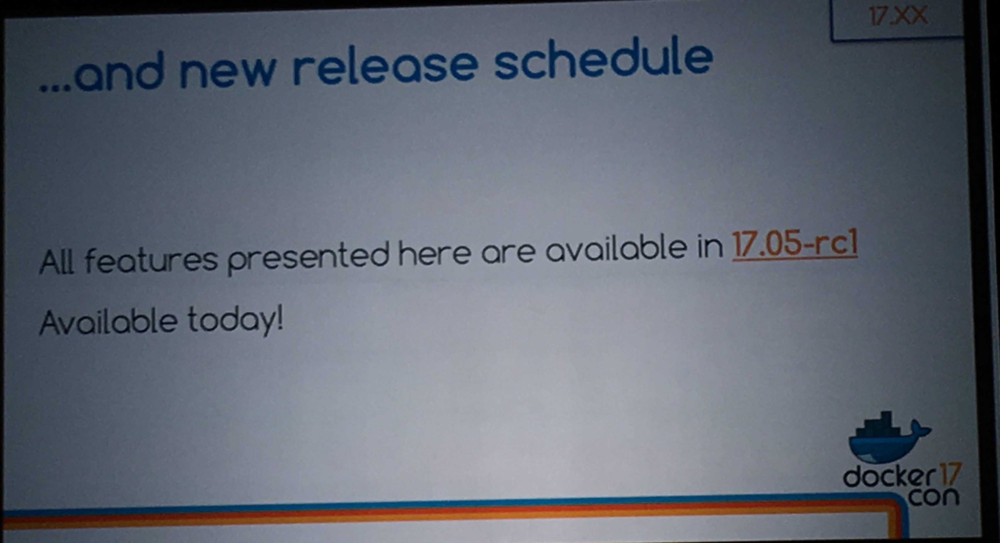
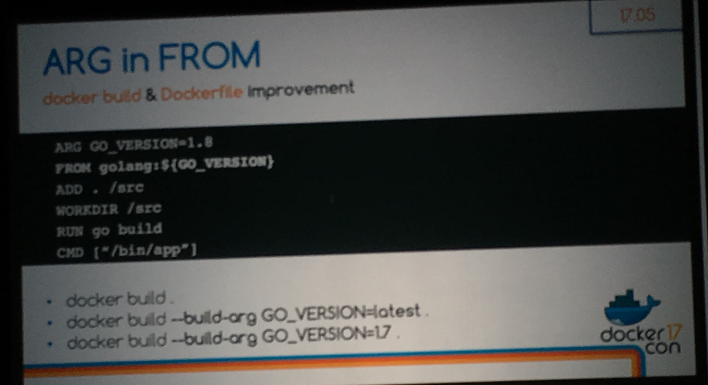
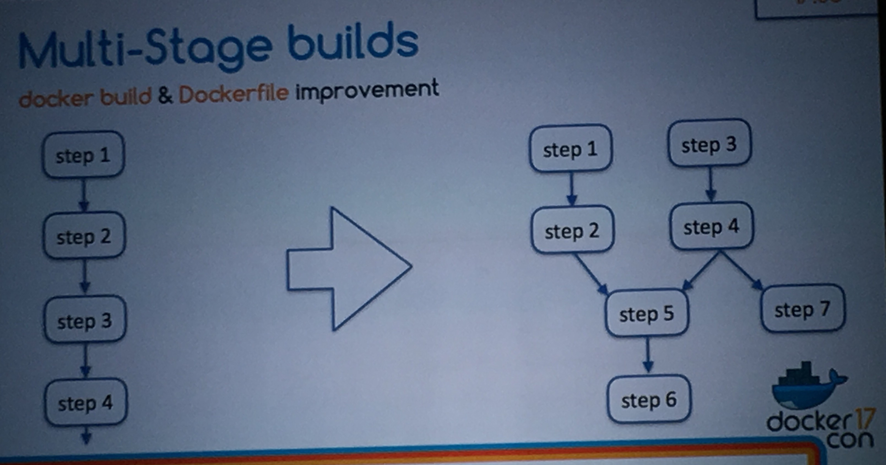
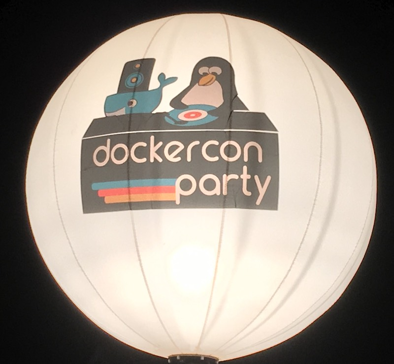

class: center, middle # Dockerfile: Multi-Stage and ARG in FROM --- # Agenda 1. Dockerfile: ARG in FROM 2. Dockerfile: Multi-Stage Builds 3. Demo --- <br/> <br/> <br/> --- # Dockerfile: ARG in FROM Dockerfile: ``` ARG GO_VERSION=1.8 FROM golang:${GO_VERSION} ADD . /src WORKDIR /src RUN go build -o hello CMD ["./hello"] ``` Build it: * `IMAGE=dockerottawa/hello` * `docker build -t $IMAGE .` * `docker build --build-arg GO_VERSION=latest -t $IMAGE .` * `docker build --build-arg GO_VERSION=1.4 -t $IMAGE .` Run it: * `docker run --rm dockerottawa/hello` --- # Dockerfile: Multi-Stage Builds Dockerfile: ``` # 1. Stage 1: build our hello binary ARG GO_VERSION=1.8 FROM golang:${GO_VERSION} AS build-hello ADD . /src WORKDIR /src RUN go build -o hello # 2. Stage 2: our minimal runtime... from scratch! FROM scratch COPY --from=build-hello src/hello hello CMD ["./hello"] ``` Build it: * `docker build -t dockerottawa/hello .` Check the size: * `docker images | grep dockerottawa/hello` --- # DEMO Note: For the demo I'm using `17.05.0-ce-rc1-mac8 (16582)` from the edge channel. One play-with-docker.com, check the `docker version` it may not (yet) be compatible. --- # Thank You 